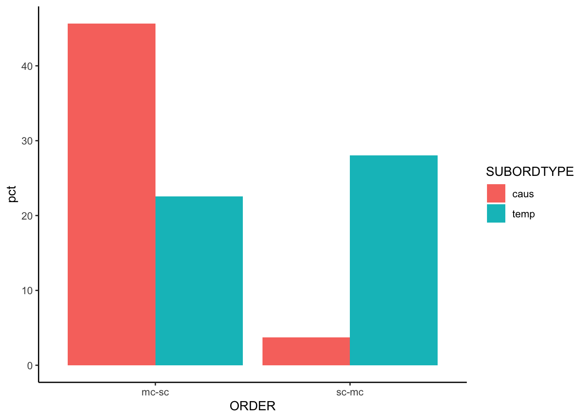

library("readxl")
library("tidyverse")9 Chi square test
9.1 Preparation
- Load packages:
- Load the data sets:
data <- read_xlsx("Paquot_Larsson_2020_data.xlsx")9.1.1 The \(\chi^2\)-test
The next step is to compute a test statistic that indicates how strongly our data conforms to \(H_0\). For instance, the Pearson \(\chi^2\) statistic is commonly used for categorical variables. It requires two types of values: the observed frequencies \(n_{ij}\) in our data set and the expected frequencies \(m_{ij}\), which we would expect to see if \(H_0\) was true.
This table represents a generic contingency table where \(X\) and \(Y\) are categorical variables. Each \(x_i\) represents a category of \(X\) and each \(y_j\) represents a category of \(Y\). In the table, each cell indicates the count of observation \(n_{ij}\) corresponding to the \(i\)-th row and \(j\)-th column.
| \(Y\) | ||||||
|---|---|---|---|---|---|---|
| \(y_1\) | \(y_2\) | … | \(y_J\) | |||
| \(x_1\) | \(n_{11}\) | \(n_{12}\) | … | \(n_{1J}\) | ||
| \(x_2\) | \(n_{21}\) | \(n_{22}\) | … | \(n_{2J}\) | ||
| \(X\) | … | … | … | … | … | |
| \(x_I\) | \(n_{I1}\) | \(n_{I2}\) | … | \(n_{3J}\) |
# Cross-tabulate the frequencies for the variables of interest
freqs <- table(data$ORDER, data$SUBORDTYPE); freqs
caus temp
mc-sc 184 91
sc-mc 15 113We calculate the expected frequencies by using the formula
\[ m_{ij} = \frac{i\textrm{th row sum} \times j \textrm{th column sum}}{\textrm{number of observations}}. \]
# Compute expected frequencies
## Calculate row totals
row_totals <- rowSums(freqs)
## Calculate column totals
col_totals <- colSums(freqs)
## Total number of observations
total_obs <- sum(freqs)
## Calculate expected frequencies
expected_table <- outer(row_totals, col_totals) / total_obs
expected_table caus temp
mc-sc 135.79404 139.20596
sc-mc 63.20596 64.79404
Definition of the \(\chi^2\)-test
Given a sample with \(n\) observations and \(k\) degrees of freedom (\(df\))1, the \(\chi^2\)-statistic measures how much the observed frequencies deviate from the expected frequencies for each cell in a contingency table (cf. Heumann, Schomaker, and Shalabh 2022: 249-251):
\[ \chi^2 = \sum_{i=1}^{I}\sum_{i=j}^{J}{\frac{(n_{ij} - m_{ij})^2}{m_{ij}}}. \] The test stipulates that …
- all observations are independent of each other,
- 80% of the expected frequencies are \(\geq\) 5, and
- all observed frequencies are \(\geq\) 1.
Implementation in R: Manual vs. automatic
# Compute chi-squared scores for all cells
## Create empty chi_squared_table for later storage
chi_squared_table <- matrix(NA, nrow = 2, ncol = 2,
dimnames = list(c("mc-sc", "sc-mc"), c("caus", "temp")))
# Loop: Repeat the following commands ...
for (i in 1:2) { # for each of the 2 rows and
for (j in 1:2) { # for each of the 2 columns:
observed_freq <- freqs[i, j] # 1. Get the observed frequencies
expected_freq <- expected_table[i, j] # 2. Get the expected frequencies
chi_squared_score <- ((observed_freq - expected_freq)^2) / expected_freq # 3. Compute chi-squared scores
chi_squared_table[i, j] <- chi_squared_score # 4. Store output in the chi_squared_table
}
}
chi_squared_table caus temp
mc-sc 17.11278 16.69335
sc-mc 36.76575 35.86463Or, more elegantly:
freqs_test <- chisq.test(freqs)
# Expected frequencies
freqs_test$expected
caus temp
mc-sc 135.79404 139.20596
sc-mc 63.20596 64.79404# Chi-squared scores
(freqs_test$residuals)^2
caus temp
mc-sc 17.11278 16.69335
sc-mc 36.76575 35.86463# Test statistics
freqs_test
Pearson's Chi-squared test with Yates' continuity correction
data: freqs
X-squared = 104.24, df = 1, p-value < 2.2e-16
Important
If the data does not meet the (expected) frequency requirements for the \(\chi^2\)-test, the Fisher’s Exact Test is a viable alternative (see ?fisher.test() for details).
9.2 Workflow in R
9.2.1 \(\chi^2\)-test
9.2.1.1 Define hypotheses
\(H_0:\) The variables
ORDERandSUBORDTYPEare independent.\(H_1:\) The variables
ORDERandSUBORDTYPEare not independent.
9.2.1.2 Descriptive overview
We plot the distribution of clause ORDER depending on SUBORDTYPE. This requires (a) selecting the desired variables, (b) computing the token frequencies and (c) computing the percentages.
Code
# Filter data so as to show only those observations that are relevant
data %>%
# Filter columns
select(ORDER, SUBORDTYPE) %>%
# Count observations
count(ORDER, SUBORDTYPE) %>%
# Compute percentages
mutate(pct = n/sum(n) * 100) -> data_order_subord
knitr::kable(data_order_subord)| ORDER | SUBORDTYPE | n | pct |
|---|---|---|---|
| mc-sc | caus | 184 | 45.657568 |
| mc-sc | temp | 91 | 22.580645 |
| sc-mc | caus | 15 | 3.722084 |
| sc-mc | temp | 113 | 28.039702 |
Next, we visualise the ORDER distribution using a barplot with a custom y-axis, requiring geom_col().
Code
# Plot distribution
data_order_subord %>%
# Map variables onto axes
ggplot(aes(x = ORDER, y = pct, fill = SUBORDTYPE)) +
# Define plot type
geom_col(pos = "dodge") +
# Define theme
theme_classic()
9.2.1.3 Running the test
# Cross-tabulate the frequencies for the variables of interest
freqs <- table(data$ORDER, data$SUBORDTYPE)
freqs ## Assumption met: all observed freqs => 1
caus temp
mc-sc 184 91
sc-mc 15 113# Run a chis-quared test on the absolute frequencies and print the results
test <- chisq.test(freqs, correct = FALSE)
# Inspect expected frequencies
test$expected # Assumption met: all expected frequences => 5
caus temp
mc-sc 135.79404 139.20596
sc-mc 63.20596 64.794049.2.1.4 Optional: Effect size
The sample-size independent effect size measure Cramer’s V (\(\phi\)) is defined as
\[V = \sqrt{\frac{\chi^2}{N \times df}}.\] The outcome varies between \(0\) (= no correlation) and \(1\) (= perfect correlation); cf. also Gries (2013: 186).
Code
# Compute Cramer's V
## By hand:
# Given chi-squared statistic
chi_squared <- unname(test$statistic)
# Total number of observations
total_obs <- sum(freqs)
sqrt(chi_squared / total_obs * (min(dim(freqs)) - 1))[1] 0.5139168Code
## Automatically:
library("confintr") # Load library
cramersv(test)[1] 0.51391689.2.1.5 Reporting the results
According to a \(\chi^2\)-test, there is a significant association between clause ORDERand SUBORDTYPE at \(p < 0.001\) (\(\chi^2 = 106.44, df = 1\)), thus justifying the rejection of \(H_0\).